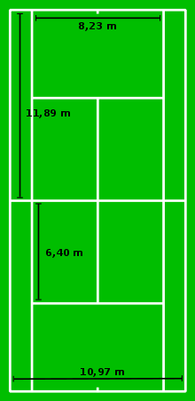
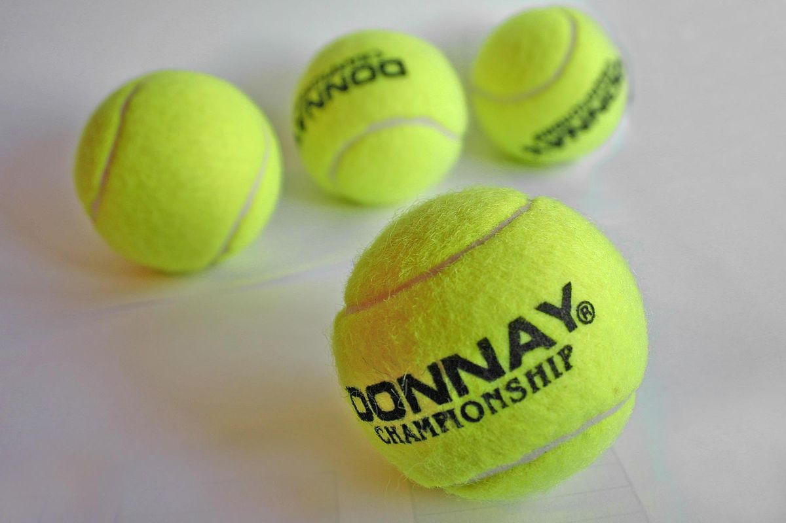
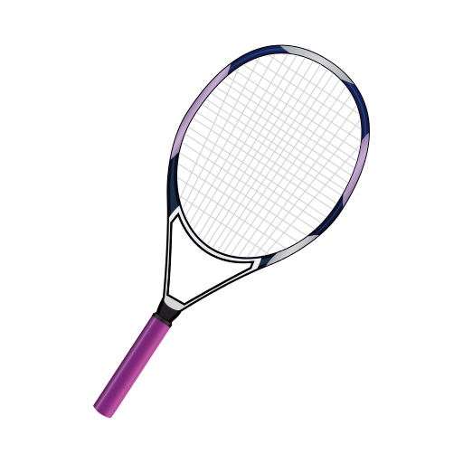

Campo de juego
El tenis se juega en una pista rectangular. Sus medidas varían dependiendo de la modalidad en que se juegue (individuales o dobles). Para individuales mide 23,78 metros de largo y 8,23 metros de ancho. Para dobles, el largo es el mismo y el ancho es de 10,97 metros. Estos límites están marcados por líneas, las cuales son consideradas parte de la pista. Una malla con forma de red divide la pista en dos mitades que corresponden a los oponentes. La altura de la red en los postes es de 1,06 metros, y en el centro de 0,914 metros. De cada lado de la red hay dos rectángulos, que miden 6,40 metros de largo y 4,11 metros de ancho, los cuales sirven únicamente para determinar si un saque es válido o no.

La pelota
Las pelotas eran blancas y negras, dependiendo de la superficie de la cancha, pero un estudio mostró que el color amarillo hacía a las pelotas más visibles para la audiencia de televisión y éstas fueron aprobadas en 1972, según explica la página oficial de la Federación Internacional de Tenis. Actualmente son amarillas y presentan una superficie exterior uniforme. En caso que tenga costuras las mismas serán sin puntadas. El diámetro de la pelota será mayor de 6,35 centímetros y menor de 6.67 centímetros. Su peso no será inferior a 56,7 gramos, ni superior a 58,5 gramos. La pelota tendrá un rebote mayor de 135 centímetros y menor de 147 centímetros al ser arrojada desde 254 metros sobre una superficie dura.

{kind=link}
La raqueta
Las raquetas de tenis deben seguir ciertas especificaciones para jugar, de lo contrario no serán permitidas. Mencionaremos sólamente algunos requisitos. La superficie de golpeo de la raqueta será plana y consistirá en un encordado de cuerdas cruzadas conectadas a un marco y entrelazadas alternativamente donde se cruzan; y el cordaje será generalmente uniforme y en particular tendrá la misma densidad en el centro que en cualquier otra área. El marco de la raqueta no excederá los 73,66 centímetros en todo el largo incluyendo el mango. La superficie del encordado no excederá los 39,37 centímetros en todo el largo, y 29,21 centímetros en todo el ancho. El marco, incluido el mango y las cuerdas, estará libre de objetos adheridos y otros dispositivos que no sean aquellos utilizados sólo y específicamente para limitar o prevenir deterioros, vibración, o para distribuir el peso.

{kind=link}
La puntuación
Un partido de tenis está compuesto por parciales (sets en inglés). El primero en ganar un número determinado de parciales es el ganador. Cada parcial está integrado por juegos (games en inglés). En cada juego hay un jugador que saca, el cual se va alternando. A su vez, los juegos están compuestos de puntos.
El primero en ganar cuatro puntos con una diferencia mínima de dos puntos con respecto a su rival es el ganador de un juego; en caso de que ninguno de los dos jugadores o equipos tenga una ventaja de dos puntos al llegar a cuatro, gana el juego el primero que logre una diferencia de dos puntos. La cuenta de los puntos es bastante particular: cuando un jugador gana su primer punto, su tanteador es 15, cuando gana dos puntos es 30 y cuando gana tres puntos es 40. Por ejemplo, si el sacador de ese juego lleva ganados tres puntos y el receptor un punto, el marcador es de 40-15. Siempre se nombra en primer lugar la puntuación del sacador. Cuando ambos jugadores empatan a 40 se dice que hay deuce o “iguales”. El primer jugador o equipo que gane un punto después del deuce logra una “ventaja”, y, en caso de ganar el siguiente punto, se lleva el juego, de lo contrario se vuelve a estar en deuce hasta que se logre la diferencia de dos puntos.
El jugador que se lleva el parcial es el que consigue hacer seis juegos, con una diferencia de dos. En caso de que un jugador llegue a seis juegos, pero con diferencia de uno (6-5) habrá que seguir hasta que alguno consiga la diferencia apropiada. Si el reglamento del torneo establece un tope de juego, habrá que jugar un juego especial denominado tie-break o “muerte súbita”, en el que el resultado se decide mediante puntos correlativos (uno-cero, dos-cero, tres-cero, etc.), hasta que alguien consiga llegar a siete tantos, con diferencia de dos. Si se llega a siete puntos sin diferencia de dos (por ejemplo: 7-6), habrá que esperar a que uno de los dos jugadores obtenga una diferencia de dos puntos, siendo éste el que consiga la victoria en el tie-break y en el parcial por 7-6. El jugador que comienza sacando en un tie-break sólo dispone de un turno de saque (con primer y segundo servicio desde el lado de la derecha) y a partir de ahí, se alternarán dos turnos de saque por jugador hasta la finalización del mismo.
Formas de anotar un punto
- La pelota pica por primera vez fuera de los límites de la pista.
- En el caso del saque cuando no logra picar en el cuadro de saque correspondiente.
- Un jugador no logra devolver la pelota por encima de la red y esta queda en su campo.
- La pelota pica dos veces seguidas en el mismo campo antes de llegar a golpearla.
- El sacador tiene dos errores o faltas de saque.
- La pelota golpea al jugador o cualquier cosa que lleve, excepto la raqueta.
- El jugador lanza la raqueta para golpear la pelota y no la tiene sujetada por la mano.